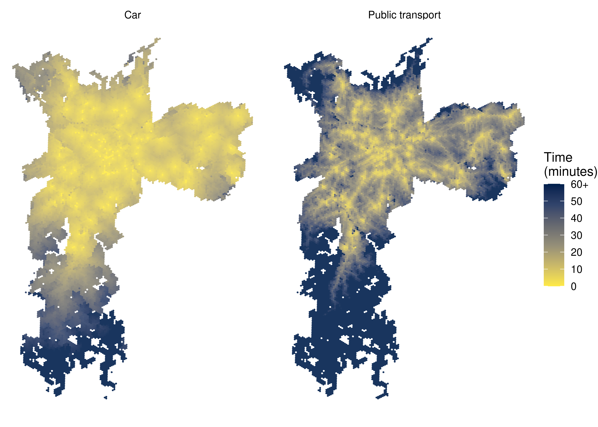
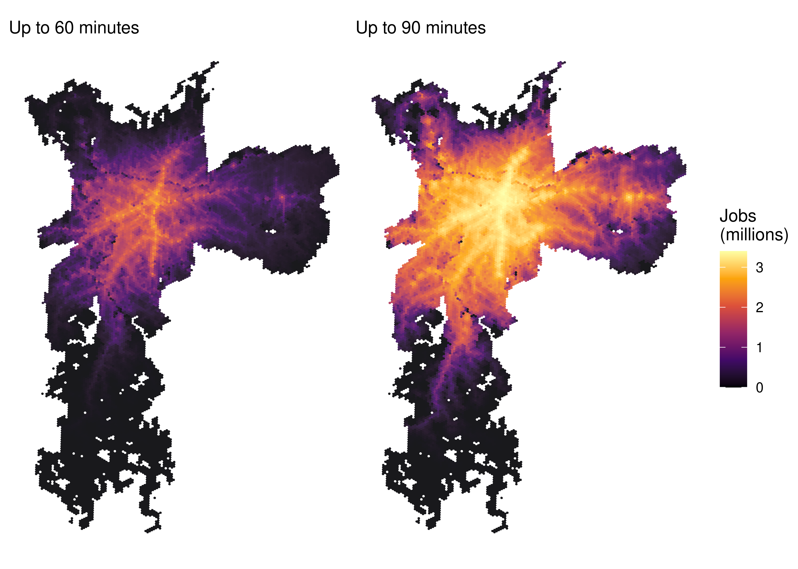
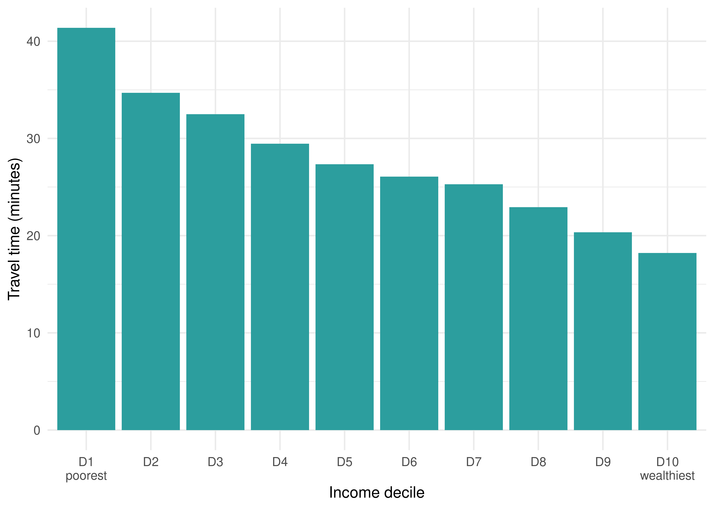
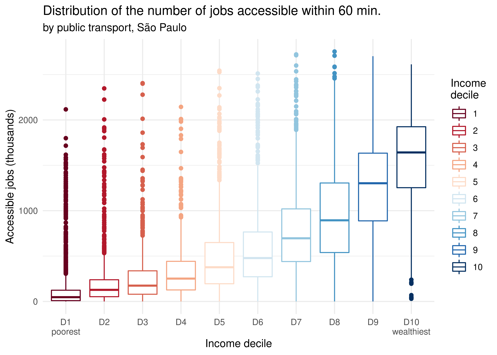
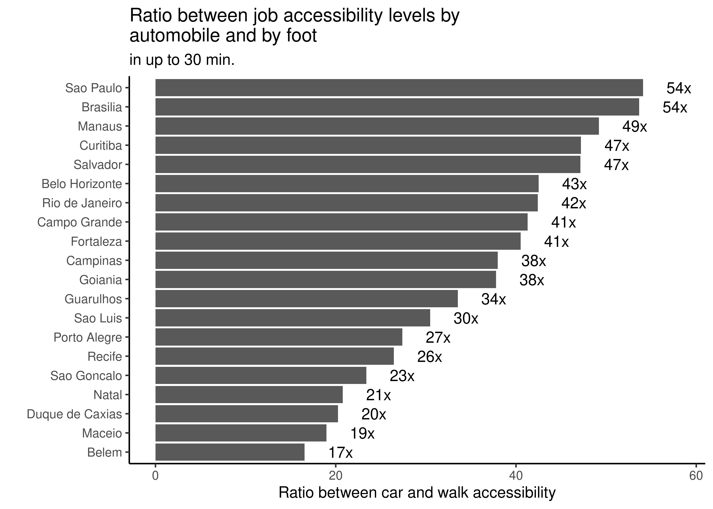

Finally, the {aopdata} package also allows one to download estimates of accessibility to jobs, public health facilities, public schools and social assistance services. These estimates were calculated using 2017, 2018 and 2019 as reference years.
This data can be downloaded with the read_access() function, which works similarly to read_population() and read_landuse(). Besides indicating the city (city parameter) and the reference year (year), though, it is also necessary to inform the transport mode (mode) and the interval of the day (peak, between 6am and 8am, or off-peak, between 14h and 16h, controlled by peak) which identify the accessibility data that should be downloaded.
With the code below, we show how to download accessibility estimates that refer to the peak period in São Paulo in 2019. In this example, we downloaded accessibility estimates both by car and by public transport and merged them into a single data.frame. Please note that this function results in a table that also includes sociodemographic and land use data.
The names of the accessibility estimates columns, such as CMAEF30, TMISB and CMPPM60, result from a combination of three components:
The type of accessibility measure, which is indicated by the first 3 letters of the code. The data includes three types of measures:
CMA - Active cumulative accessibility;
CMP - Passive cumulative accessibility; and
TMI - Minimum travel time to the nearest opportunity.
The type of activity to which the accessibility levels were calculated, indicated by the following two letters, in the middle of the column name. The data includes accessibility estimates to various types of activities:
TT - All jobs;
TB - Low education jobs;
TM - Middle education jobs;
TA - High education jobs;
ST - All public health facilities;
SB - Low complexity public health facilities;
SM - Medium complexity public health facilities;
SA - High complexity public health facilities;
ET - All public schools;
EI - Early childhood public schools;
EF - Primary public schools;
MS - Secondary public schools;
MT - Total number of enrollments in public schools;
MI - Number of enrollments in early childhood public schools;
MF - Number of enrollments in primary public schools;
MM - Number of enrollments in secondary public schools; and
CT - All CRAS.
In the case of the passive cumulative measure, the letters in the middle of the column name indicate the population group which the accessibility estimates refer to:
PT - The entire population;
PH - Male population;
PM - Female population;
PB - White population;
PN - Black population;
PA - Yellow population;
PI - Indigenous population;
P0005I - Population from 0 to 5 years old;
P0614I - Population from 6 to 14 years old;
P1518I - Population from 15 to 18 years old;
P1924I - Population from 19 to 24 years old;
P2539I - Population from 25 to 39 years old;
P4069I - Population from 40 to 69 years old;
P70I - Population aged 70 years old and over.
The travel time threshold used to estimate the accessibility levels, which is indicated by the two numbers at the end of the column name. This component only applies to the active and passive cumulative measures. The data includes accessibility estimates calculated with cutoffs of 15, 30, 45, 60, 90 and 120 minutes, depending on the transport mode.
Examples:
CMAEF30: number of accessible primary public schools within 30 minutes of travel;
TMISB: minimum travel time to the closest low complexity public health facility; and
CMPPM60: number of women that can access a certain grid cell within 60 minutes of travel.
The full description of the columns can also be found in the function documentation, running the ?read_access command in R. The following sections show examples illustrating how to create spatial visualizations and charts out of the accessibility dataset.
9.1 Map of travel time to access the nearest hospital
In this example, we compare the access time from each grid cell to the nearest public hospital by car and by public transport. To analyze the minimum travel time (TMI) to high complexity public hospitals (SA), we use the TMISA column. With the code below, we load the data visualization libraries and configure the maps showing the spatial distribution of access time by both transport modes. Because public transport trips are usually much longer than car trips, we truncate the travel time distribution to 60 minutes.
library(ggplot2)library(patchwork)# truncates travel times to 60 minutesdata_sp$TMISA <-ifelse(data_sp$TMISA >60, 60, data_sp$TMISA)ggplot(subset(data_sp, !is.na(mode))) +geom_sf(aes(fill = TMISA), color =NA, alpha =0.9) +scale_fill_viridis_c(option ="cividis",direction =-1,breaks =seq(0, 60, 10),labels =c(seq(0, 50, 10), "60+") ) +labs(title ="Travel time to the nearest high complexity public hospital",subtitle ="São Paulo",fill ="Time\n(minutes)" ) +facet_wrap(~ mode) +theme_void()

Figure 9.1: Travel time to the closest high complexity public hospital in São Paulo
9.2 Map of employment accessibility
The accessibility dataset also makes it very easy to compare the number of accessible opportunities when considering different travel time thresholds. Using the code below, for example, we illustrate how to visualize, side-by-side, the spatial distribution of employment accessibility by public transport trips of up to 60 and 90 minutes.
# determine min and max values for the legendlimit_values <-c(0, max(access_pt $CMATT90, na.rm =TRUE) /1000)fig60 <-ggplot(subset(access_pt, !is.na(mode))) +geom_sf(aes(fill = CMATT60 /1000), color =NA, alpha =0.9) +scale_fill_viridis_c(option ="inferno", limits = limit_values) +labs(subtitle ="in up to 60 min." , fill ="Jobs\n(thousands)") +theme_void()fig90 <-ggplot(subset(access_pt, !is.na(mode))) +geom_sf(aes(fill = CMATT90 /1000), color =NA, alpha =0.9) +scale_fill_viridis_c(option ="inferno", limits = limit_values) +labs(subtitle ="in up to 90 min.", fill ="Jobs\n(thousands)") +theme_void()fig60 + fig90 +plot_layout(guides ="collect") +plot_annotation(title ="Spatial distribution of job accessibility by public transport",subtitle ="São Paulo" )

Figure 9.2: Job accessibility by public transport in São Paulo
9.3 Accessibility inequalities
Finally, {aopdata} accessibility dataset can be used to analyze accessibility inequalities across different Brazilian cities in several different ways. In this subsection, we present three examples of this type of analysis.
Inequality in travel time to access opportunities
In this first example, we compare the average travel time to the nearest high complexity public hospital for people of different income levels. To do this, we calculate, for each income group, the average travel time to reach the nearest high complexity health facility, weighted by the population of each grid cell. Weighting the travel time by population is necessary because each cell has a different population size, thus contributing differently to the average accessibility of the population as a whole.
Before performing the calculation, we should note that some grid cells cannot reach any high complexity hospital within two hours of travel. In these cases, the minimum travel time columns assume an infinite value (Inf). To deal with this situation in our example, we replace all Inf values by a travel time of 120 minutes.
# copies access data into a new data.frameineq_pt <-data.table::as.data.table(access_pt)# replaces Inf values with 120ineq_pt [, TMISA :=ifelse(is.infinite(TMISA), 120, TMISA)]# calculates the average travel time by income decileineq_pt <- ineq_pt[ , .(avrg =weighted.mean(x = TMISA, w = P001, na.rm =TRUE)), by = R003]ineq_pt <-subset(ineq_pt, !is.na(avrg))ggplot(ineq_pt) +geom_col(aes(y = avrg, x =factor(R003)), fill ="#2c9e9e", color =NA) +scale_x_discrete(labels =c("D1\npoorest", paste0("D", 2:9), "D10\nwealthiest") ) +labs(title ="Average travel time to the nearest hospital",subtitle ="by public transport in São Paulo ",x ="Income decile",y ="Travel time (minutes)" ) +theme_minimal()

Figure 9.3: Average travel time by public transport to the nearest high complexity hospital in São Paulo
Inequality in the number of accessible opportunities
Another way of examining accessibility inequalities is by comparing the number of opportunities that can be reached by different population groups considering the same transport modes and travel time limits. In this case, we analyze the active cumulative accessibility measure, represented by columns whose names start with CMA in the {aopdata} dataset. Using the code below, we compare the number of jobs accessible by people of different income deciles by public transport in up to 60 minutes.
ggplot(subset(access_pt, !is.na(R003))) +geom_boxplot(aes(x =factor(R003), y = CMATT60 /1000, color =factor(R003)) ) +scale_color_brewer(palette ="RdBu") +labs(title ="Distribution of the number of jobs accessible within 60 min.",color ="Income\ndecile",subtitle ="by public transport, São Paulo",x ="Income decile",y ="Accessible jobs (thousands)" ) +scale_x_discrete(labels =c("D1\npoorest", paste0("D", 2:9), "D10\nwealthiest") ) +theme_minimal()

Figure 9.4: Distribution of job accessibility by public transport in São Paulo
Finally, we can also compare how the usage of different transport modes can lead to different accessibility levels and how the discrepancy between modes varies across cities. In the example below, we compare the number of jobs that one can access in up to 30 minutes of walking and driving. To do this, we first download accessibility estimates by both transport modes for all cities covered by AOP.
Next, we calculate, for each city and transport mode, the weighted average number of jobs accessible by trips of up to 30 minutes (CMATT30). We then join these estimates together into a single table and calculate the ratio between car and walk accessibility levels.
avg_car <- data_car[ , .(access_car =weighted.mean(CMATT30, w = P001, na.rm =TRUE)), by = name_muni]avg_walk <- data_walk[ , .(access_walk =weighted.mean(CMATT30, w = P001, na.rm =TRUE)), by = name_muni]# merges the data and calculates the ratio between access by car and on footavg_access <-merge(avg_car, avg_walk)avg_access[, ratio := access_car / access_walk]head(avg_access)
Finally, we can analyze the results using a chart:
ggplot(avg_access, aes(x = ratio, y =reorder(name_muni, ratio))) +geom_bar(stat ="identity") +geom_text(aes(x = ratio +4 , label =paste0(round(ratio), "x"))) +labs(title ="Ratio between job accessibility levels by \nautomobile and by foot",subtitle ="in up to 30 min.",y ="",x ="Ratio between car and walk accessibility" ) +theme_classic()

Figure 9.5: Ratio between job accessibility levels by car and by foot considering trips of up to 30 minutes in the 20 biggest Brazilian cities
As expected, Figure 9.5 shows that car trips lead to much higher accessibility levels than equally long walking trips. This difference, however, greatly varies across cities. In São Paulo and Brasília, a 30-minute car trip allows one to access, on average, 54 times more jobs than what it would be possible to access with walking trips. In Belém, the city from our sample with the smallest difference, one can access 17 times more jobs by car than by foot - still a substantial difference, but much smaller than in other cities.